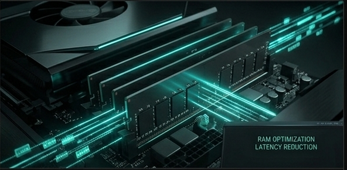

Manual de optimización avanzada para sistemas con recursos limitados.
La industria del hardware opera bajo una premisa cínica: el estrangulamiento artificial. Nos venden la idea de que un equipo con 4GB u 8GB de RAM es "insuficiente" para el software moderno, no porque las tareas básicas lo requieran, sino porque el software se diseña deliberadamente para ser ineficiente (bloatware), obligándote a comprar un nuevo dispositivo.
Cuando tu sistema se queda sin memoria, el núcleo del sistema operativo (kernel) comienza a cerrar procesos violentamente (OOM Killer), provocando crashes y frustración. Este es el mecanismo de control: hacer que tu herramienta se sienta obsoleta para que cedas ante el consumo.
Para luchar contra la escasez de memoria, debemos implementar una estrategia de capas. No se trata solo de añadir espacio, sino de gestionar la densidad de datos.
El Swap es un espacio en el disco duro que el sistema utiliza como si fuera RAM cuando esta se llena. Es lento, pero es la red de seguridad que evita que el sistema colapse.
zRAM crea un dispositivo de bloque comprimido en la propia RAM. En lugar de mover datos inmediatamente al disco lento (Swap), el kernel los comprime y los mantiene en la RAM. Esto permite que 4GB de RAM física se comporten como si fueran 6GB o más.
| Recurso | Velocidad | Latencia | Propósito | Impacto |
|---|---|---|---|---|
| RAM Física | Ultra Rápida | Mínima | Ejecución inmediata | Recurso finito |
| zRAM | Rápida | Baja | Compresión en tiempo real | Multiplicador |
| Swap (SSD/HDD) | Lenta | Alta | Emergencia | Seguro |
free -hsudo apt update && sudo apt install zram-config -ysudo fallocate -l 4G /swapfile
sudo chmod 600 /swapfile
sudo mkswap /swapfile
sudo swapon /swapfile
echo '/swapfile none swap sw 0 0' | sudo tee -a /etc/fstabsudo sysctl vm.swappiness=10
echo 'vm.swappiness=10' | sudo tee -a /etc/sysctl.confAl implementar este protocolo, has dejado de ser un consumidor pasivo para convertirte en un administrador de tu propia infraestructura. Tu equipo dejará de congelarse, podrás ejecutar más aplicaciones simultáneamente y prolongarás la vida útil de tu hardware por años.
La verdadera potencia de una máquina no reside en la cantidad de gigabytes que el fabricante te permitió comprar, sino en la capacidad del usuario para optimizar y dominar la herramienta.